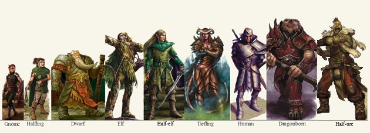
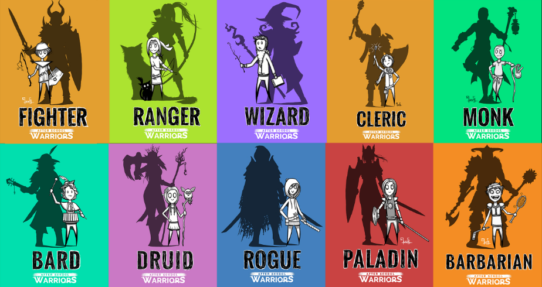
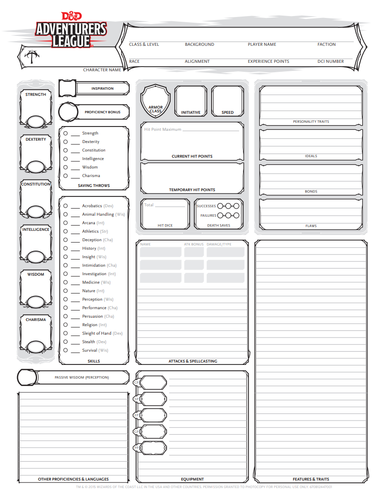
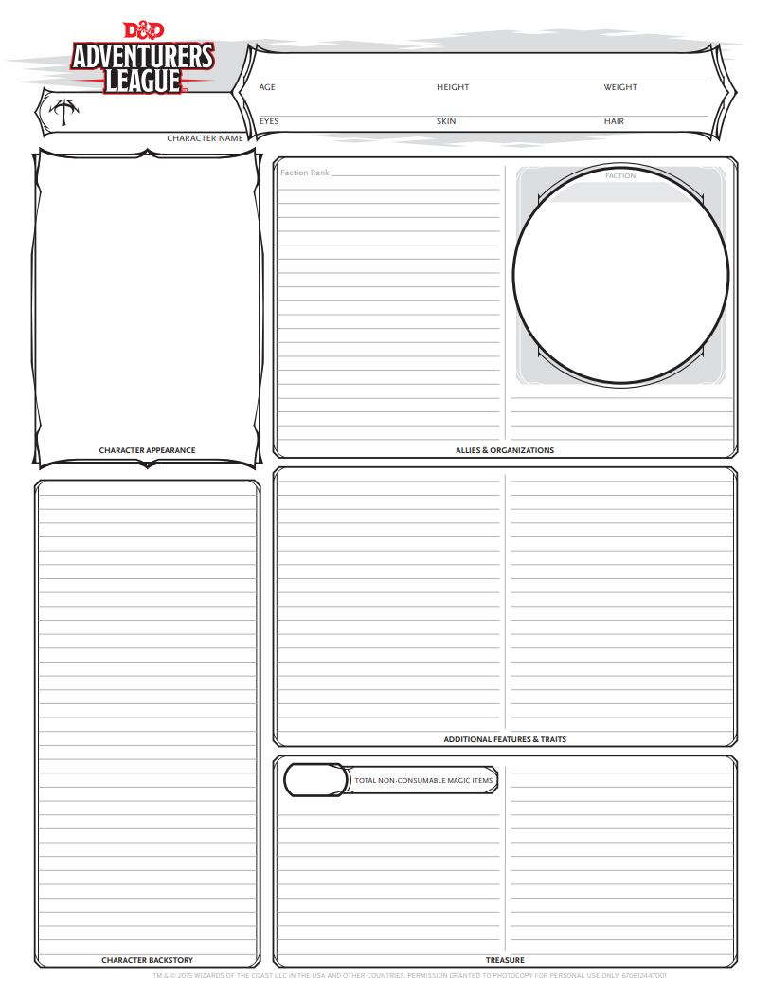
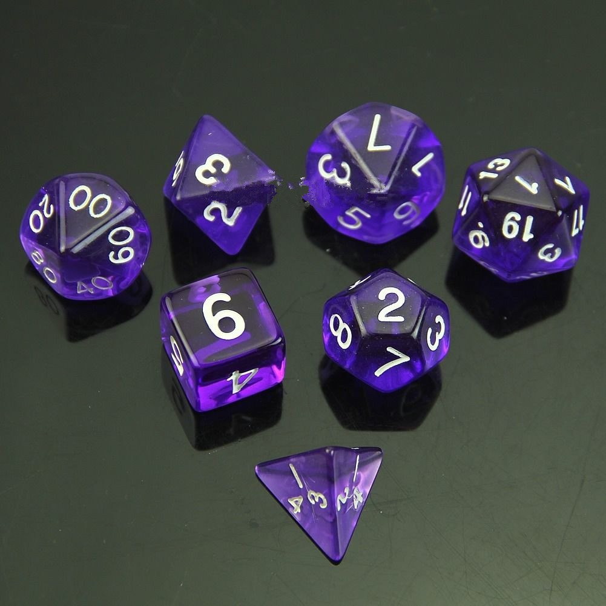

Regulile jocului Dungeons and Dragons
Sistemul de joc
Dungeons&Dragons se bazeaza pe un grup de jucatori coordonati de un
Dungeon Master, o persoana responsabila cu nararea povestii,cu indrumarea jucatorilor si controlarea inamicilor,npc-urilor si a altor personaje.
Personajele jucatorilor sunt alcatuite dint-o combinatie de 3 parti diferite:
Rasa + Clasa + Background
Rasele:
- Dwarf
- Elf
- Tiefling
- Human
- Dragonborn
- Half-Elf
- Gnome
- Half-ling.

Clasele:
- Barbarian
- Cleric
- Ranger
- Fighter
- Paladin
- Rogue
- Druid
- Wizard
- Sorcerer

Statsurile fiecarui caracter:
- Hp - punctele de viata
- Ac - clasa armurii (punctele de aparare impotriva daunelor)
- Speed - distanta pe care o poate parcurge un caracter in timpul luptei
- Str - Strength = Putere
- Dex - Dexterity = Dexteritate
- Cha - Charisma = Carisma
- Int - Intelligence = Inteligenta
- Wis - Wisdom = Incelepciune
- Con - Constitution = Constitutie
- Inventarul
- Armele disponibile
- Trasaturile specifice rasei
- Trasaturile caracterului


Zarurile:
- D20- zar cu 20 de fete, folosit in toate situatiile jocului
- D100- zar cu 10 fete (reprezentand procentele 10-100)
- D12- zar cu 12 fete
- D10- zar cu 10 fete
- D8- zar cu 8 fete
- D6- zar cu 6 fete
- D4- zar cu 4 fete

Desfasurarea luptei si a checkurilor necesare multor situatii
- D20- valorilor indicate dupa aruncarea zarurilor le sunt adaugate valorile unor skilluri pentru valoarea finala necesara unui Check
- D20- Valoare inidicata + punctele de atac
- Hit/Miss- daca valoare trece de punctele de aparare ale tintei
- D12/D8/D6/D4 - daunele specifice tuturor armelor in functie de clasa din care provin.
Recompensele:
- Experienta necesara avansarii in nivel
- Monede in joc
- Artefacte / Obiecte magice
- Consumabile
Campanii / One-shots:
Jocul se desfasoara cu ajutorul unui
dungeon master, care poate rula o
campanie pre-made de creatorii jocului, intinsa pe mai multe
sesiuni.
Aventurile de
o singura sesiune se numesc
one-shots, o singura misiune, cu o poveste scurta.
Jocul se invarte in jurul jucatorilor si a dungeon masterului, interactiunea dintre personajele jocului si cele ale jucatorilor,se realizeaza prin intermediul
roleplay-ului.
Acestia incearca sa se puna in acele situatii, in pielea personajelor si sa actioneze cat mai autentic. Dungeon Masterul poate recompensa acest lucru prin evitarea unui check, sau prin acordarea de puncte de inspiratie(bonusuri).